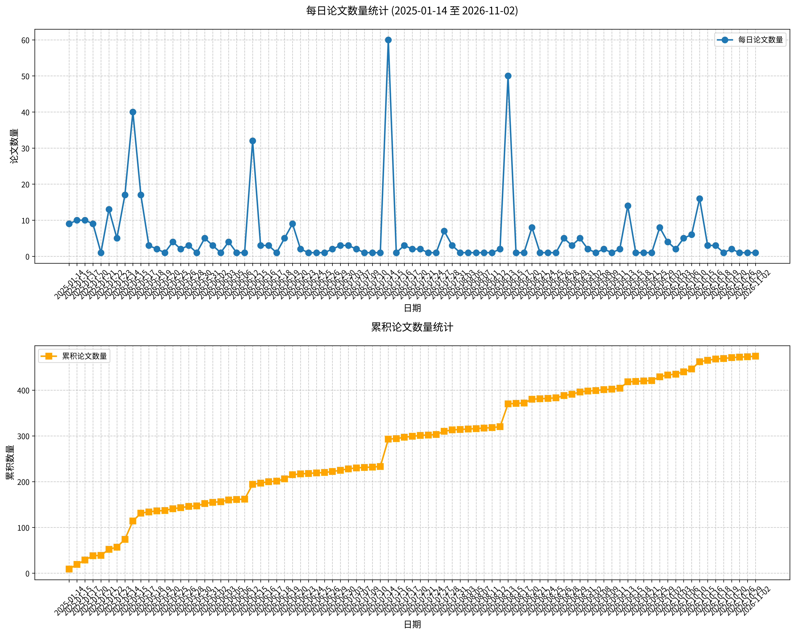

原文标题： Depth-adaptive suppression of subject-dependent interference for robust cross-subject EEG emotion recognition.
摘要： 目的：跨被试脑电情绪识别受个体间差异限制，这种差异会将被试特异性干扰信息嵌入学习到的表征中，并降低对未见个体的泛化能力。方法：我们提出一种基于EEG Conformer的两阶段层级自适应主体干扰抑制框架。在搜索阶段，将可微门控和对抗性主体分类器附加到来自图块嵌入层和Transformer模块的分层表征上，以估计主体信息编码最强的位置。随后固定排名靠前的层，并重新训练模型用于最终情绪分类。进一步使用主体感知的监督对比正则化器来改进标签一致的跨被试表征学习。结果：在严格留一被试评估下于SEED数据集上的实验表明，其性能优于代表性的机器学习、域适应和深度学习方法。在SEED-IV上的辅助实验表明其在更具挑战性的标签设置下具有适应性。逐层探测显示，被试特异性信息在不同深度仍可解码，但在浅层和早期中间表征中相对更强。结论：选择性深度感知抑制为稳健的基于脑电的情感脑机接口提供了一种实用且可解释的策略。
关键词： 脑电情绪识别；跨被试泛化；主体干扰抑制；深度自适应；情感脑机接口
论文链接： PubMed
